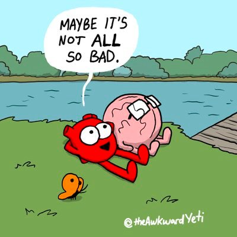

-- U.G. Krishnamurti
“Since the ego has no hope of surviving in paradise. it’ll always want to be on the 'road to paradise'.”
--Chuck Hillig
"When someone is without hope because they can see that there is no cause for hope, there's hope."
--Jed McKenna
The woman on social media posts, “I need to have hope. Hope is the only thing that keeps me going.” Everyone cheers her on. Go girl. You can do this.
Well, except weirdo me. I’m thinking, “Oh honey, no.”
I mean, of course I get that humans love a good hope. Who doesn’t love those wishes and yearnings for happiness, better feelings, better circumstances? Who isn’t counting on them to turn into actualities, simply by the power of our wanting?
Surely we can think life into giving us what we want.
Although it’s not like, even if we have enough hope, life will actually come through with what is hoped for.
There is no actual connection between hoping and getting.
Meanwhile, usually it’s unnoticed how that kind of wishful yearning makes things in the here and now.
Because hope is all about later- a better-than-this tomorrow, a better-than-this life. Next time! Looking forward.
Making what’s actually here now feel lacking, inadequate, not enough.
Yes it might feel very true that what’s present in this current life is miserable, suffering, not ok.
Of course we’d want to wish all that away with hope.
It just that when our focus is on a better later, it becomes difficult to notice or value anything good in the actual present.
When the experience is, “This sucks, I need something better,” we’re not going to notice what’s good right now.
Hope is the opposite of enough. Hope is the opposite of good. Hope is the opposite of This Is It.
I mean, yeah this may be It, but give us a better It, wouldja? This It is unacceptable.
Hope is seeking.
Not to mention that hope is 100% a fantasy.
There’s nothing real about it.
We imagine- as in, create a mental image of- a better life, a better situation, a better feeling.
A fictionalized, idealized, aspiration of what we think will be better than this.
A dream. Made up by thought.
Not real.
It’s nothing.
So when we hope, we’re pining for a dream. We're chasing some fictional ideal, a fantasy improvement out there later.
Which of course is not the end of the world. I mean, sure, hope away. Nothing wrong with that.
It’s just that if the current experience includes depression or anxiety or addiction, hope subtly, quietly, actually, makes things worse.
So just for novelty and because why not, it might be fun to put attention on something else for a change.
It might be fun to notice the present, notice what’s literally good enough right now, notice what doesn’t need improvement right now.
A body, able to feel. A mind, able to think. Gravity, air, breath, love, humor, quiet, internet, sight, sound.
Feelings of all kinds, liked and disliked.
A modern-day mediation.
Lived.
Thought will say that’s not enough.
But if what’s actually here isn’t enough, if the good that’s actually in our lives doesn’t count, how will we notice “better” when it comes along?
This is not a suggestion to be fakely positive. It’s just that, if better is truly what we want, we might notice what we’ve got first.
Because life never promised that anyone will ever get anything more than This.
So it might be kinder, more peaceful, more reasonable, to accept and expect an imperfect present,
with whatever goodness is already in it.
And see if it’s enough.
Anything else is
Hopeless.
